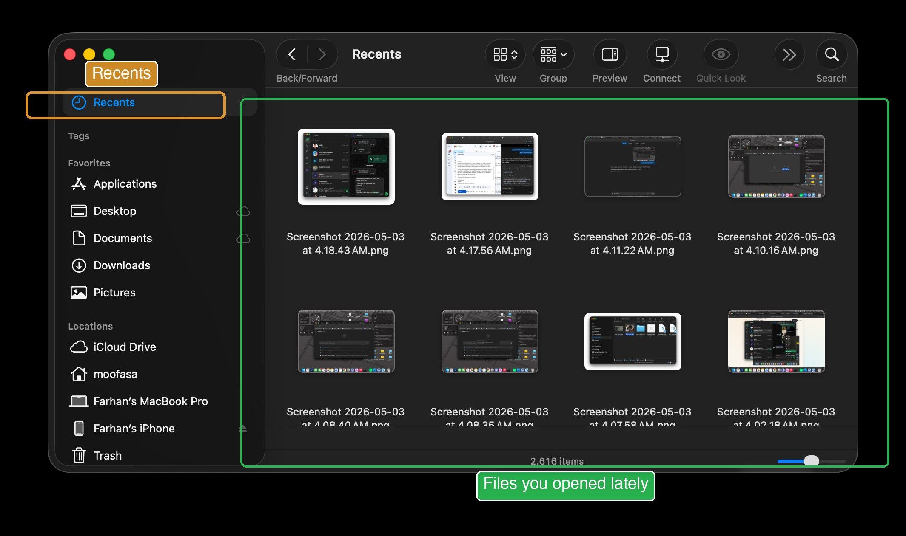
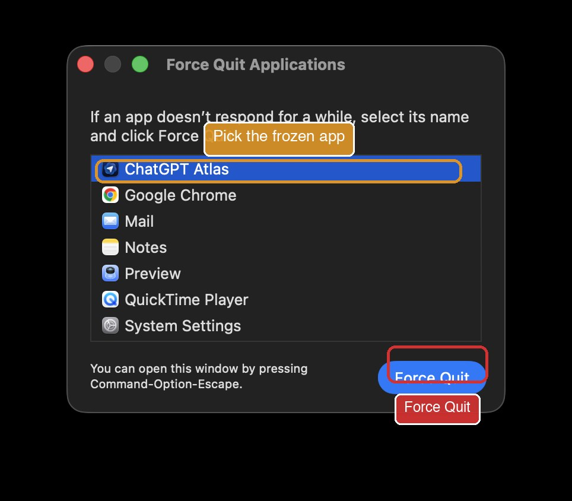

"I can't find my file."
After this slide, you'll have three reliable ways to find any file you've ever saved on your Mac.
Your file is on your Mac somewhere. Three ways to find it:
Way 1, Spotlight
- Press ⌘+Space.
- Type any part of the filename.
- Click the file from results, or press Enter.
Way 2, Finder Recents
- Open Finder.
- In the sidebar, click Recents.
- You'll see every file you've recently opened or saved, newest first.
Way 3, Downloads folder
If you downloaded from email, web, or WhatsApp, it's in Finder → Downloads.

⌘+Z, your panic button.
After this slide, you'll never fear "I clicked the wrong thing" again.
Did you accidentally type something wrong? Delete a paragraph? Move a file to the wrong folder? Press ⌘+Z. The Mac undoes whatever just happened.
You can press it more than once. Each press goes one step further back.
Where ⌘+Z works:
- In any text editor (Word, TextEdit, Pages)
- In email (Gmail, Mail)
- In Finder (after moving or renaming a file)
- In Photos, Preview, Notes
- Almost everywhere
To redo (undo your undo):
Press ⌘+Shift+Z.
Special: I closed a browser tab by mistake.
Press ⌘+Shift+T. The closed tab comes back.
Special: I sent an email by mistake.
In Gmail and Mail, look at the bottom of the screen for an Undo button right after sending. You have 5 to 30 seconds.
"This app stopped working."
After this slide, you'll know how to safely close any frozen app without restarting your whole Mac.
Sometimes an app freezes, the cursor becomes a spinning rainbow, clicks don't do anything. Don't restart the Mac. Use Force Quit.
- Press ⌘+⌥+Esc all together.
- A small window opens listing all your open apps.
- Click the stuck app's name (it may say "(Not Responding)" in red).
- Click the Force Quit button.
- Confirm if asked.

If even Force Quit doesn't work:
Hold the power button for 5 seconds. The Mac shuts off. Wait 10 seconds. Press the power button again to restart.
Never paste these into ChatGPT, ATLAS, Claude, or Gemini.
After this slide, you'll know what's safe to share with AI and what's not, protecting your money, identity, and privacy.
AI tools are useful, but anything you paste into them may be stored on someone else's computer. Treat them like a public notice board: useful, but not private.
Never paste these into any AI:
-
Passwords or PINs, for your bank, email, anything.
-
Bank account numbers, credit card numbers, debit card details, OTPs.
-
National ID, NID, passport number, driver's licence number.
-
Medical reports with your name on them, blur the name first if you must.
-
Other people's private details, full address, phone numbers, their bank details. It's not yours to share.
What's safe to share with AI:
- Letters and emails (without sensitive numbers)
- News articles, books, public documents
- Recipes, instructions, general questions
- Documents you've already removed personal info from
- Photos that aren't of ID cards or bank papers
If you accidentally pasted something private:
- Don't panic, but treat it as if everyone could see it.
- Tell your son immediately.
- If it was a password, change that password from the original service.
- If it was a card number, call the bank and freeze the card.